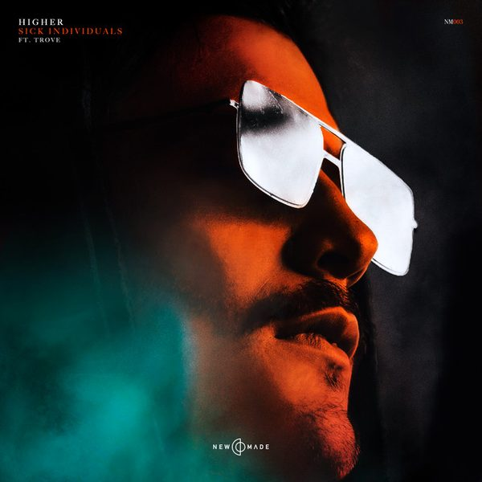

I 25 dischi
 1
Shout it outCristian Marchi & Luis Rodriguez feat. Max'C
1
Shout it outCristian Marchi & Luis Rodriguez feat. Max'C
 2
Breaking Me (HUGEL Remix )Topic, A7S
2
Breaking Me (HUGEL Remix )Topic, A7S
 3
29Andry J
3
29Andry J
 4
Good FeelingsMartin Ikin
4
Good FeelingsMartin Ikin
 5
Waiting On My LoveKryder & Tom Staar feat. EBSON
5
Waiting On My LoveKryder & Tom Staar feat. EBSON
 6
Whoomp!Superlover
6
Whoomp!Superlover
 7
My FeelingsRiggi & Piros x VENIICE with RANI
7
My FeelingsRiggi & Piros x VENIICE with RANI
 8
TarzanArmin van Buuren & Blasterjaxx
8
TarzanArmin van Buuren & Blasterjaxx
 9
On My Mind (Purple Disco Machine Remix)Diplo, SIDEPIECE, Purple Disco Machine
9
On My Mind (Purple Disco Machine Remix)Diplo, SIDEPIECE, Purple Disco Machine

10 HigherSick Individuals, Trove 11
Hypnotized (Loods Remix)Purple Disco Machine & Sophie and the Giants
11
Hypnotized (Loods Remix)Purple Disco Machine & Sophie and the Giants
 12
One Thing (Extended Mix)Malarkey
12
One Thing (Extended Mix)Malarkey
 13
Back To You (Extended Mix)JSPM
13
Back To You (Extended Mix)JSPM
 14
Acid (Extended Mix)Savage Kids
14
Acid (Extended Mix)Savage Kids
 15
I'm a raver babyMilk Bar
15
I'm a raver babyMilk Bar
 16
Free My Mind (with Dubdogz)Alok & Rooftime
16
Free My Mind (with Dubdogz)Alok & Rooftime
 17
Django (Extended Mix)Jewelz & Sparks
17
Django (Extended Mix)Jewelz & Sparks
 18
Moon (Extended Mix)GAWP
18
Moon (Extended Mix)GAWP
![Sabb — One of Us (feat. Forrest [Dennis Ferrer Remix])](https://cdn-images.dzcdn.net/images/cover/d2dbf145cb235a3cde011dfbb5dec403/250x250-000000-80-0-0.jpg) 19
One of Us (feat. Forrest [Dennis Ferrer Remix])Sabb
19
One of Us (feat. Forrest [Dennis Ferrer Remix])Sabb
 20
Hollywood (Umberto Balzanelli - Francesco Palla - Michelle Bootleg Rmx)La Vision & Gigi D'Agostino
20
Hollywood (Umberto Balzanelli - Francesco Palla - Michelle Bootleg Rmx)La Vision & Gigi D'Agostino
 21
Pushing OnRene Amesz
21
Pushing OnRene Amesz
 22
Mustang 74Darius Syrossian
22
Mustang 74Darius Syrossian
 23
Need 4 MeJoe Diem, Guezmark
23
Need 4 MeJoe Diem, Guezmark
 24
Do As I SayMirko & Meex
24
Do As I SayMirko & Meex
 25
I Feel So (Sinner & James Remix)HRDY, Sinner & James
25
I Feel So (Sinner & James Remix)HRDY, Sinner & James
La tracklist
- 1 Shout it out Cristian Marchi & Luis Rodriguez feat. Max'C Mind The Floor
- 2 Breaking Me (HUGEL Remix ) Topic, A7S Intercord
- 3 29 Andry J Bang Record
- 4 Good Feelings Martin Ikin Sola
- 5 Waiting On My Love Kryder & Tom Staar feat. EBSON Axtone Records
- 6 Whoomp! Superlover Armada Music
- 7 My Feelings Riggi & Piros x VENIICE with RANI Armada Music
- 8 Tarzan Armin van Buuren & Blasterjaxx Armada Music
- 9 On My Mind (Purple Disco Machine Remix) Diplo, SIDEPIECE, Purple Disco Machine FFRR
- 10 Higher Sick Individuals, Trove Future House Music
- 11 Hypnotized (Loods Remix) Purple Disco Machine & Sophie and the Giants Columbia Local
- 12 One Thing (Extended Mix) Malarkey Something Good
- 13 Back To You (Extended Mix) JSPM Hexagon
- 14 Acid (Extended Mix) Savage Kids Hexagon
- 15 I'm a raver baby Milk Bar Bootleg
- 16 Free My Mind (with Dubdogz) Alok & Rooftime CONTROVERSIA
- 17 Django (Extended Mix) Jewelz & Sparks Spinnin' Records
- 18 Moon (Extended Mix) GAWP HELDEEP Records
- 19 One of Us (feat. Forrest [Dennis Ferrer Remix]) Sabb Armada Music
- 20 Hollywood (Umberto Balzanelli - Francesco Palla - Michelle Bootleg Rmx) La Vision & Gigi D'Agostino Time Records
- 21 Pushing On Rene Amesz Toolroom Records
- 22 Mustang 74 Darius Syrossian ITH
- 23 Need 4 Me Joe Diem, Guezmark Ocean Trax Music / The Saifam
- 24 Do As I Say Mirko & Meex Glasgow Underground
- 25 I Feel So (Sinner & James Remix) HRDY, Sinner & James Guesthouse Music